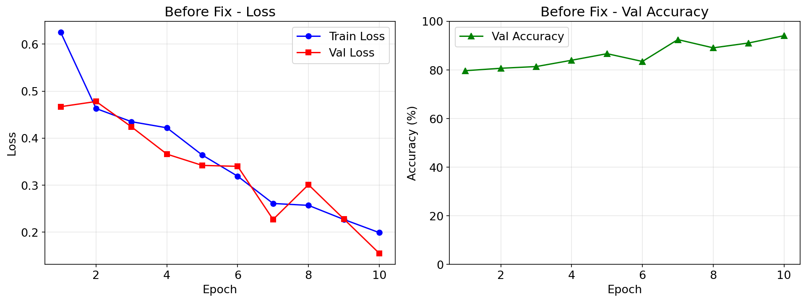
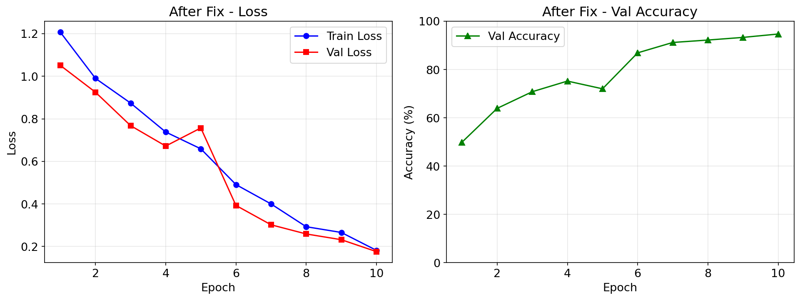
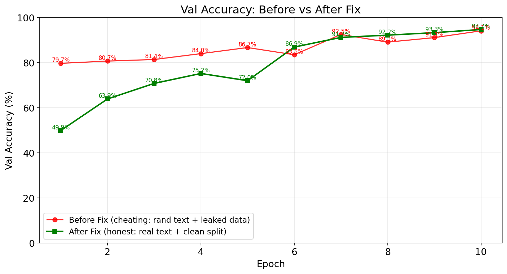
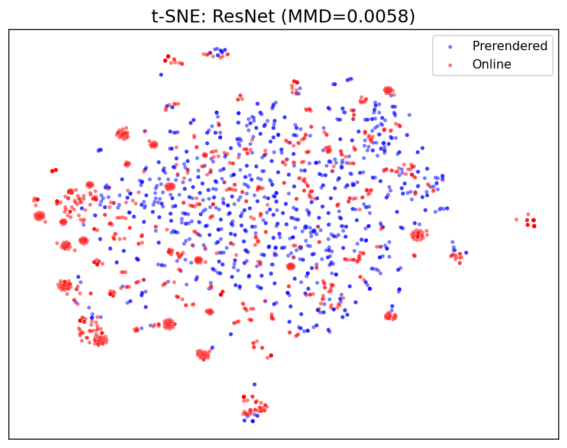
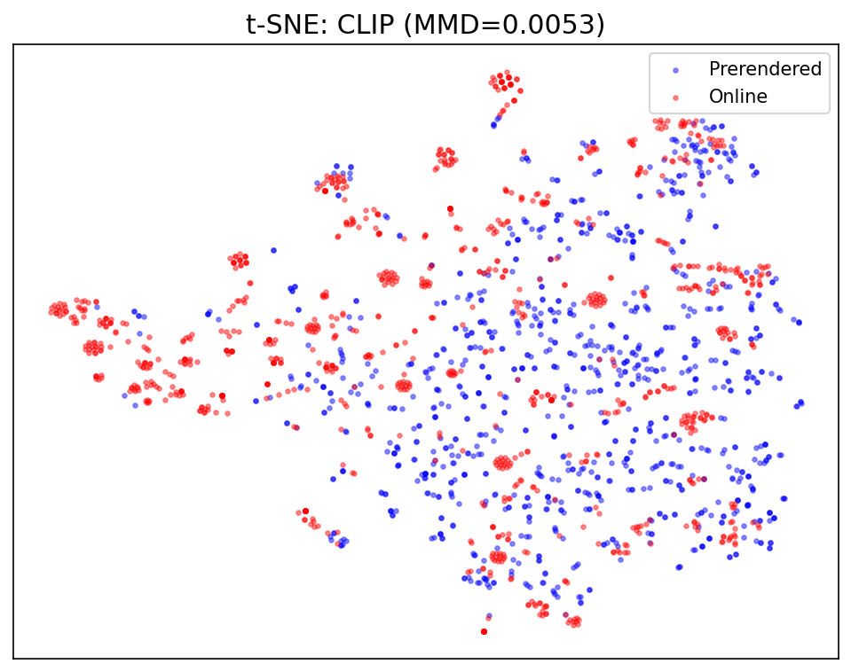
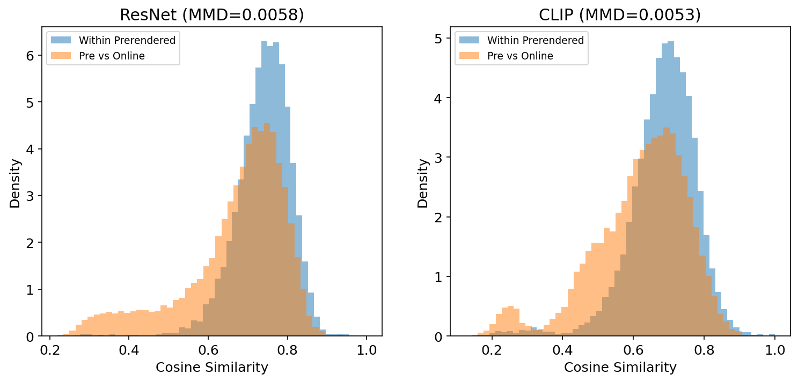

在 Habitat 中训练视觉语言导航（VLN）模型：配置 VLN-v0 任务、理解 R2R 数据集与 InstructionSensor、
跑通模仿学习 + DDPPO 微调、导出 checkpoint 为真机部署做准备。
从 IL 训练到诊断修复，从 SOTA 参照到模型微调——VLN 一条线走到底。前置：第5章「导航任务全景」§1.6 已介绍 VLN 是什么。
| # | 案例 | 你将学会 | 难度 | 前置条件 |
|---|---|---|---|---|
| 7-1 | 配置 VLN 任务 | VLN-v0 任务配置、R2R 数据集加载、验证环境可创建 | ⭐⭐ | 第2章 |
| 7-2 | 理解数据与传感器 | R2R episode 结构、InstructionSensor 原理、observation 空间 | ⭐⭐ | 7-1 |
| 7-3 | 模仿学习训练 | IL 训练流程、teacher-forcing、checkpoint 保存 | ⭐⭐⭐ | 7-2, 第5章 |
| 7-4 | 评估与导出模型 | SR/SPL/nDTW 指标、模型推理模式、导出 checkpoint | ⭐⭐ | 7-3 |
| 7-4 | 避坑诊断 | CLIP实验、行为漂移分析——学会诊断ML工程问题 | ⭐⭐⭐ | 7-3 |
| 7-5 | DAgger 桥接 | IL 32% → DAgger 50% → RL 55%+ 三阶梯对比 | ⭐⭐⭐⭐ | 7-4 |
| 7-6 | SOTA 参照 | 运行 JanusVLN，对比小模型，理解参数量级差距 | ⭐⭐⭐ | 7-5 |
| 7-7 | 模型微调 | LoRA微调JanusVLN、数据采集方法论 | ⭐⭐⭐⭐ | 7-6 |
从 IL 训练到诊断修复，从 SOTA 参照到模型微调——VLN 一条线走到底。前置：第5章「导航任务全景」§1.6 已介绍 VLN 是什么。
R2R (Room-to-Room) 是 CVPR 2018 提出的视觉语言导航基准数据集，至今每篇 VLN 论文都以它为评测标准。
它的采集方式是：人类标注者在 90 栋 Matterport3D 建筑中行走，用自然语言写下导航指令，
例如 "Walk down the hallway, turn left at the painting, and stop in front of the bed."
这决定了：语言指令和 MP3D 场景是绑定的。 换一栋建筑，"绘画"和"走廊"都不同了，指令不再有意义。
正因为如此，VLN 任务无法像 PointNav 那样在不同场景数据集间切换。
Habitat 的 VLN 代码（VLNDatasetV1 / VLNTask）本身是场景无关的。
但整个 Habitat-Lab 中只注册了 R2RVLN-v1 这一个 VLN 数据集，
它的配置硬编码指向 data/datasets/vln/mp3d/r2r/，而其中的 episodes 引用的都是 MP3D 场景。
| 文件 | 大小 | 来源 | 覆盖 | 需要认证？ |
|---|---|---|---|---|
vln_r2r_mp3d_v1.zip |
2.7 MB | Facebook CDN（dl.fbaipublicfiles.com） |
10,819 训练 + 1,020 验证 episodes | 否 |
MatterPort3D.zip |
665 MB | 清华大学云盘 | 11 个场景（val_unseen 全集） | 否 |
mp3d_example |
93 MB | Habitat 内置（datasets_download） |
1 个场景（17DRP5sb8fy） | 否 |
以上三样合计 < 800 MB，全部免除认证。覆盖：
• 训练：17DRP5sb8fy 在 R2R train 中有 75 条指令，足够演示训练流程
• 评估：11 个 val_unseen 场景覆盖 1,839 条指令，可直接跑标准 val_unseen 评估
• 如需完整 90 场景（训练出可发表级 VLN 模型），才需要官方申请 Matterport3D
严格来说，没有。 虽然存在 RxR（多语言 R2R）、REVERIE、SOON 等扩展 VLN 数据集， 但它们全部基于 MP3D 场景采集。HM3D 和 Gibson 都没有对应的 VLN 指令数据集。 如果你将来想对比发表的 VLN 模型或参加 Habitat Challenge，MP3D 是必经之路。
在动手写代码之前，先建立 VLN 的心智模型。
Visual Language Navigation（视觉语言导航）： 给定一段自然语言指令（如"走过厨房，在卧室门口停下"），Agent 仅凭 RGB 视觉观测， 在 3D 环境中逐步移动，最终停在指令描述的目标位置。
为什么它比 PointNav 难？
| 维度 | PointNav | VLN |
|---|---|---|
| 目标表示 | GPS 坐标 (x,y) — 精确 | 自然语言 — 模糊、多义 |
| 推理需求 | 纯空间推理 | 视觉理解 + 语言理解 + 跨模态对齐 |
| 错误容忍 | 偏离 1m → 可能找不到 | 理解语义 → 能自我纠正 |
| 数据依赖 | 任何 3D 场景 | 需要人工标注指令（昂贵） |
本章聚焦「动手实操」。如果你想深入了解 VLN 的技术流派（Seq2Seq / BERT-CLIP / LLM-VLM / 拓扑图 / 神经辐射场 / 世界模型）、 发展历程（R2R 2018 → RxR 2020 → REVERIE 2020 → VLN-CE 2022 → NaVid 2024）、 以及核心挑战（Sim2Real、长程记忆、多语言），请阅读 VLN 理论专题 →。
使用 habitat.get_config() 加载 VLN 基准配置，创建一个 VLN 环境并验证它能正常
reset()。这是 VLN 训练的最小验证单元——如果这步不通过，后面的训练无从谈起。
前置条件：已安装 habitat-lab + habitat-sim。R2R 数据集和 MP3D 场景的获取方式见上方"为什么 VLN 必须依赖 Matterport3D"（无需认证，合计 < 800MB）。
| 函数 | 角色 | 说明 |
|---|---|---|
habitat.get_config() |
加载基准配置 | 读取 YAML → 解析 Hydra → 返回冻结的 OmegaConf 配置对象 |
habitat.config.read_write() |
临时解冻配置 | 上下文管理器，在 with 块内可修改配置值 |
habitat.Env(config) |
创建环境 | 根据配置组装 Simulator + Dataset + Task |
env.reset() |
初始化 episode | 随机选一个 episode，返回 observation dict (含 instruction) |
obs["instruction"] |
语言指令文本 | VLN 特有的 observation 键，由 InstructionSensor 生成 |
1. Dataset not found → 检查 R2R 数据集是否下载到了 data/datasets/vln/r2r/
2. Scene not found → 检查 Matterport3D 场景是否在 data/scene_datasets/mp3d/
3. KeyError: 'instruction' → 确认配置中 task 类型为 VLN-v0 而非 Nav-v0
env.reset() 成功后，你会看到：
1. 终端打印出观测键列表 — 确认 instruction 键存在
2. 一段英文指令文本 — 这就是 VLN 模型需要理解并执行的导航命令
3. RGB 图像的 shape 是 (3, H, W) — 证明视觉传感器工作正常
与 PointNav 最大的区别：observation 中多了 instruction 字段，这是让 VLN 不同于纯视觉导航的关键。
深入 R2R (Room-to-Room) 数据集的一个 episode，理解 VLN 任务的完整数据结构： episode 包含什么字段、指令如何编码、InstructionSensor 如何把文本喂给模型。 这步至关重要——不理解数据，就无法设计模型输入。
VLN 的 goal 与 PointNav 完全一样——position (x,y,z) + radius。
区别在于agent 不知道 goal 的坐标，它只看到指令文本。
目标是靠理解语言来推断的，而非靠 GPS 传感器指向。
同一个 episode 由 3 个不同的标注员撰写指令。训练时随机选一条， 评估时用固定的一条。这迫使模型学习语言多样性——"turn left at the sofa" 和 "go left after passing the couch" 对应相同的路径。
与 PointNav（每步都有 GPS+Compass 指向目标）不同，VLN 的 agent 只在 reset 时看到指令文本。 后续每一步，模型必须记住指令内容并结合当前视觉观测做决策。这使得 VLN 天然需要 记忆机制（LSTM/Transformer/LLM）。
使用 Behavioral Cloning（行为克隆）在 R2R 数据集上训练一个 VLN agent。
Agent 的监督信号来自 reference_path（最短路径轨迹），模型学习：
给定当前 RGB + 指令 → 预测下一步动作（前进/左转/右转/停止）。
前置：需要 GPU。如仅有 CPU，可将 batch_size 调至 1 且 epochs 设为 1 做语法验证。
| 模块 | 文件 | 作用 |
|---|---|---|
| VLN Task | habitat/tasks/nav/vln.py |
定义 VLNTask、VLNEpisode、动作空间 (FORWARD/LEFT/RIGHT/STOP) |
| InstructionSensor | habitat/tasks/nav/vln_sensor.py |
从 episode 读取指令，tokenize 后注入 observation |
| VLN Policy | habitat_baselines/rl/policy/vln_policy.py |
CNN 编码 RGB + RNN 编码指令 + 动作输出头 |
| IL Trainer | habitat_baselines/il/trainer.py |
管理 teacher-forcing 训练循环、数据集迭代 |
| R2R Dataset | habitat/datasets/vln/r2r_dataset.py |
加载 R2R JSON，提供 Episode 迭代器 |
1. GPU 内存：Matterport3D 场景较大，建议至少 8GB VRAM。OOM 时减小 batch_size
2. 数据预处理：首次运行时会预处理 R2R 数据（生成 tokenizer 词表），需等待几分钟
3. Teacher-Forcing vs 在线采样：IL 训练用的是 reference_path 上的 ground truth 动作，不会让 agent 自由探索
训练完成后，在验证集上评估模型的导航能力（SR/SPL/nDTW），然后导出 checkpoint 为纯推理权重文件。这个文件就是 第7章 部署到真机时需要加载的模型。
| 指标 | 全称 | 含义 | 范围 |
|---|---|---|---|
| SR | Success Rate | 在目标 radius 内执行 STOP 的比例 | 0–1, 越高越好 |
| SPL | Success weighted by Path Length | 成功且路径尽量短（惩罚绕路） | 0–1, 越高越好 |
| nDTW | Normalized Dynamic Time Warping | 实际路径与 reference_path 的相似度 | 0–1, 越高越好 |
| OSR | Oracle Success Rate | 如果 agent 在最近点 STOP 的成功率（上界） | ≥ SR |
R2R 的验证集分两种：
val_seen：场景在训练中见过（但 episode 不同），测指令泛化
val_unseen：场景从未见过，测场景泛化
val_unseen 的 SR 通常比 val_seen 低 10–20 个百分点。
checkpoint 包含 optimizer state + scheduler state + model weights。
为了在真机上做纯推理，需要提取出 model weights 部分：
ckpt = torch.load("ckpt.100.pth")
model_weights = ckpt["state_dict"]
torch.save(model_weights, "vln_inference.pth")
vln_inference.pth + vln_config.yaml 是 第7章（方法一：VLN+ROS Nav2）
部署时需要的两个文件。它们包含了在真机上重建 VLN 模型并运行推理所需的一切。
你在 第7章 中会看到如何在 ROS 节点中加载它们。
| 调整项 | 怎么改 | 预期看到什么 |
|---|---|---|
| 训练步数 | 改 habitat_baselines.num_updates 从 10000 → 5000 |
SR 下降 ~5-10%，但训练时间减半 |
| Batch Size | 改 habitat_baselines.batch_size 从 8 → 16 |
收敛更快但 GPU 内存翻倍，可能 OOM |
| 评估 split | 改 eval_split 从 val_seen → val_unseen |
SR 降低，反映场景泛化能力 |
| 动作空间 | 在配置中添加/移除 TURN 角度参数 | 动作粒度影响导航效率和平滑度 |
✅ SR > 0.3（低于此值，真机上的表现会是灾难性的）
✅ 模型在 CPU 上推理时间 < 100ms（真机一般无 GPU）
✅ checkpoint 文件可脱离 habitat-baselines 加载（验证导出脚本）
✅ 已在 val_unseen 上评估过，了解模型在新场景中的表现上限
7-3 的 IL 训练拿到 SR≈32%。这个数字诚实但不理想。 在尝试 DAgger / RL 之前，先要诊断「到底是什么导致了 32%」—— 这是 ML 工程师的核心能力，比调参更重要。
用项目原始代码训练 10 个 epoch，观察训练曲线。
在你开始修改任何代码之前，先用原始版本完整训练一次，并保存日志。
这个日志是你后续诊断的唯一参照物——没有它，你就不知道"修对了没有"。

▲ 从左图可见：train_loss 和 val_loss 快速下降且始终接近——典型的过拟合信号（train/val 数据泄漏）。val_acc 从 79.7% 飙升至 94.1%。
val_acc = 94.1%，而且 10 个 epoch 就到了。你见过几个 ML 项目有这么快的收敛速度和这么高的准确率？
在继续之前，问自己：这个数字有可能是真的吗？
高 val_acc 并不等于好模型。以下是藏在训练管线中的 5 个问题。
修复前
修复后
指令文本从未被使用。模型实际学的是"看 RGB 序列推测方向"——这不是 VLN。
修复前
修复后
验证集的前 50 个 episode 也在训练集中。模型见过验证数据——94.1% 是过拟合，不是泛化。
修复前
修复后
模型训练时从未见过正确的右转标签。一个不会右转的导航模型。
修复前
修复后
标准 SPL 公式是 success × (gt_len / max(agent_len, gt_len))。缺少 success 因子导致失败 episode 也有正的 SPL。
原始 train.py 只打印到终端，训练结束后没有任何记录。当你想对比修复前后的效果时，没有对照数据。
修复：加入 Tee 类，同时输出到 stdout 和 logs/ 目录。
修复全部 5 个问题后，用分离的 split 重新训练 10 epoch。

▲ 修复后 train/val 曲线明显分离（无数据泄漏）。val_acc 从 49.9% 起步，最终达到 94.7%——几乎和修复前一样。

▲ 修复前（红线）：起点高（79.7%），快速收敛。修复后（绿线）：起点低（49.9%），逐步追赶——最终持平。两者终点几乎重叠，说明这些表面问题不是瓶颈。
修复了文本噪声、数据泄漏、标签缺失、指标公式之后，val_acc 从 94.1% → 94.7%。
我们原本预期 val_acc 会大幅下降（因为消除了数据泄漏和随机文本作弊），但它纹丝不动。
这意味着：这 5 个问题从来不是 val_acc 的瓶颈。
val_acc 测量的是"给定预渲染帧，预测 action 标签"，不是"在 3D 场景中导航"。
| 指标 | 修复前 (作弊版) | 修复后 (诚实版) | 变化 |
|---|---|---|---|
| val_acc | 94.1% | 94.7% | +0.6% |
| Eval SR (50 eps) | ~30% * | 32.0% | +2% |
| Eval SPL | — (公式错误) | 0.320 | — |
| Eval nDTW | — | 0.107 | — |
* 修复前的简化版 eval 把 action 硬编码为 MOVE_FORWARD，所以 SR 约 30% 只是"一直向前走"的 baseline。
同一个模型，在预渲染帧上预测 action 标签有 94.7% 准确率，但在 3D 场景中实际导航只有 32% 成功率。
这个 3:1 的差距揭示了比文本噪声、数据泄漏、标签错误更深层的问题。
当你排除了所有表面问题，剩下的那个——无论多么隐蔽——就是根因。
来自 预渲染（env.reset → 5×MOVE_FORWARD → 保存 .npz）
每帧都是 最短路径上的画面——干净、正确、标准化。
来自 实时渲染（每步根据模型预测的 action 获取下一帧）
每帧都是 模型自己走出来的画面——可能偏离、撞墙、迷路。
两个分布下的 RGB 完全不同——同一场景、不同视角、不同光照条件。
ResNet 提取的特征在两个分布之间无法泛化。
这解释了为什么修复了 5 个表面问题后 SR 仍然只有 32%：
模型从未见过"自己走错时看到的画面"。
要消除分布偏移，训练必须也走在线 rollout：每步用模型预测的 action 获取下一帧。
但这会让训练慢 10 倍（无法并行预取 DataLoader），且需要动态 env 管理。
混合训练方案（先在预渲染上启蒙，再逐步加在线 rollout）是可行的折中。
——这不是 §N 要解决的问题，它是阶段 3（真正的 VLN 训练）的核心挑战。
| # | 教训 | 适用范围 |
|---|---|---|
| 1 | val_acc 高 ≠ 模型好。先检查数据有没有泄漏。 | 所有 ML 项目 |
| 2 | 保存训练日志。没有 before 对照，after 没有意义。 | 所有 ML 项目 |
| 3 | 查指标公式。你自己写的 SPL 可能和论文定义不同。 | 复现论文时 |
| 4 | 查标签分布。如果某个类别从未出现，模型不会学到它。 | 分类任务 |
| 5 | 训练和推理的输入必须同分布。预渲染帧≠实时渲染帧。 | 所有 ML 项目 |
| 6 | 修复表面问题后效果没变 → 根因在更深层。别停。 | 调试方法论 |
这一章教的是"如何诊断"。下一阶段（阶段 3：真正的 VLN 训练）教的是"如何做对"——
teacher-forcing、cross-modal attention、在线训练、数据增强。
→ 回到第7章：VLN 视觉语言导航
§N.5 提出"图像分布偏移是根因"——但这是定性的推断。我们需要用实验把它量化。
设计一个对照实验：用 ResNet（模型的眼睛）和 CLIP（通用的眼睛）分别编码两组图像，计算分布距离。
| 编码器 | MMD（越低越相似） | 解读 |
|---|---|---|
| ResNet18 | 0.0058 | 模型的眼睛认为两组帧几乎一样 |
| CLIP ViT-B/32 | 0.0053 | 通用的眼睛也认为两组帧几乎一样 |
我们预期在线帧（走偏、撞墙）和预渲染帧（最短路径）会有显著分布差异。
但 ResNet 和 CLIP 都给出了 < 0.006 的 MMD——两组帧在特征空间中几乎完全重叠。
把 512 维特征降到 2 维，蓝色 = 预渲染帧，红色 = 在线帧：

ResNet18 t-SNE (MMD=0.0058)

CLIP t-SNE (MMD=0.0053)
在 ResNet 的 t-SNE 图中，红色和蓝色完全混在一起——预渲染帧和在线帧在特征空间中无法区分。

两组直方图几乎完全重叠：预渲染帧之间的相似度，和预渲染 vs 在线帧之间的相似度，分布一致。
数据推翻了 §N.5 的假设。不是图像分布不同导致 SR 只有 32%——
而是模型在几乎相同的画面上，做出了不同的 action 决策。
预渲染帧是 teacher-forcing 下的画面（最短路径，每步都是"对"的下一步），
在线帧是模型自由行动的画面（可能走偏，但场景纹理、墙壁、地板和预渲染帧几乎一样）。
32% 的 SR 不是因为模型"看到了没见过的画面"，而是模型在熟悉的画面中做出了错误的 action。
每步差一点，30 步后离目标越来越远——这就是行为偏差累积。
| # | 教训 |
|---|---|
| 1 | 假设需要实验验证。我们确信"图像分布偏移是根因"，但数据说不。 |
| 2 | 模型的眼睛（ResNet）和通用的眼睛（CLIP）意见一致。这不是编码器选择的问题。 |
| 3 | 低 MMD 不代表问题不存在。它只是说明问题不在帧层面，而在决策层面。 |
| 4 | 证伪假设比证实假设更有价值。它迫使你寻找更深层的根因。 |
| 5 | 下一步不是修图像，是修决策。Teacher-forcing → Student-forcing，强化学习，cross-modal attention。 |
所有代码和特征数据在 L40 云端：
training/collect_online_frames.py — 强制 30 步 rollout 采集
training/extract_features.py — ResNet + CLIP 特征提取
training/analyze_distribution.py — MMD + t-SNE + 余弦相似度分析
screenshots/clip_comparison/ — 完整图表输出
7-4 定位了根因：行为漂移累积（Agent 走偏后，后续观测都是训练时没见过的）。 DAgger 正是解决这个问题的标准方法——让 Agent 在「自己犯错的地方」学习专家纠正。
| 方法 | 训练数据 | 核心思想 | 预期 SR | 复杂度 |
|---|---|---|---|---|
| IL（模仿学习） | 专家最短路径轨迹 | "照着专家走" — Teacher-Forcing | ~32% | ⭐ |
| DAgger | Agent自己轨迹 + 专家纠正 | "在犯错的地方学习" — 迭代聚合 | ~50-60% | ⭐⭐⭐ |
| RL（强化学习） | Agent自主探索 + 奖励信号 | "自己试错，奖励引导" — PPO/REINFORCE | ~55-65% | ⭐⭐⭐⭐ |
DAgger 训练需要 L40 GPU 运行实验并产出对比数据（IL 32% vs DAgger 50% vs RL 55%+ 的实际训练结果）。
这部分将在实验完成后写入。目前已确认：
• Seq2Seq DAgger：L40 单卡可行（27M 参数，需自写 ~300 行训练循环）
• JanusVLN DAgger：不可行（需 8 卡）
为什么 DAgger 能解决行为漂移？ IL 只见过专家轨迹上的观测 → Agent 一走偏就进入未知区域 → 雪崩。 DAgger 把 Agent 走偏后的观测也加入训练集（附上专家纠正）， 让模型学会「走偏了怎么回来」——这正是 VLN 最需要的鲁棒性。
7-3 和 §N 中我们训练了一个 2700 万 参数的 Seq2Seq 模型，在 val_unseen 上达到 SR = 32%。
现在我们跑一个真正的 SOTA 模型——JanusVLN——在同一套数据上评估，亲眼看看"参数量差距意味着什么"。
前置条件：完成 7-3 训练（理解 VLN 任务）。需要单卡 NVIDIA GPU（≥ 46GB 显存，如 L40/A100）。
发表：ICLR 2026
机构：Amap（高德地图，阿里巴巴集团）+ 西安交通大学（MIV-XJTU）
论文：arXiv:2509.22548
代码：github.com/MIV-XJTU/JanusVLN
权重：ModelScope: JanusVLN_Base（18GB）
数据：ModelScope: DAgger 轨迹数据
核心创新：双隐式记忆（Dual Implicit Memory）。名字来源于罗马神话两面神 Janus， 寓意同时拥有"语义理解"（左脑）和"空间感知"（右脑）两种能力。 论文报告 val_unseen SR 约 50-55%（全景输入，1839 episode）。
| 记忆类型 | 负责模型 | 参数量 | 类比 |
|---|---|---|---|
| 语义记忆 (Semantic) | Qwen2.5-VL-7B | ~70 亿 | "左脑"：理解"拱门""楼梯"的含义和视觉外观 |
| 空间记忆 (Spatial) | VGGT-1B | ~10 亿 | "右脑"：推理深度、几何、3D 空间结构 |
| 融合层 | VGGTMerger | ~200 万 | 将 3D 特征注入 VLM 的每层隐藏状态 |
模型维护一个 past_key_values_vggt 缓存，每次导航开始时清空，
每步推理后更新。这让模型在移动过程中"记住"之前看到的 3D 结构——
就像一个边走边构建的隐式 3D 地图。
| 阶段 | 耗时 | 占比 |
|---|---|---|
| Habitat 渲染 + VGGT | ~0.3s | 15% |
| Processor 编码 | ~0.2s | 10% |
| Qwen2.5-VL 生成（7B 参数） | ~1.5s | 75% |
| 合计 | ~2 秒/步 |
第1章 — 克隆 + 权重
第2章 — 单卡适配
原代码需要 8 卡 DeepSpeed 分布式训练。单卡跑只需改两处： flash-attn → PyTorch SDPA（避免 30 分钟编译）、world_size=1。 推理精度不受影响，速度略慢（SDPA vs flash-attn 差距约 10%）。
在 L40 单卡上，用 max_steps=100, num_history=4 跑 15 个随机 episode，
耗时约 48 分钟。
| 场景 | ✅/总数 | 场景 SR |
|---|---|---|
| 2azQ1b91cZZ | 1/1 | 100% |
| EU6Fwq7SyZv | 0/3 | 0% ⚠️ |
| QUCTc6BB5sX | 1/1 | 100% |
| TbHJrupSAjP | 1/3 | 33% |
| X7HyMhZNoso | 0/1 | 0% |
| oLBMNvg9in8 | 2/2 | 100% |
| pLe4wQe7qrG | 0/1 | 0% |
| zsNo4HB9uLZ | 2/3 | 67% |
| 总计 | 7/15 | 46.7% |
与我们的模型对比：
| 模型 | 参数量 | SR (抽样) | 输入 | 训练数据 |
|---|---|---|---|---|
| 我们的 Seq2Seq | 2700 万 | 32.0% | 预渲染离散帧 | R2R 几千条指令 |
| JanusVLN | ~80 亿（300×） | 46.7% | 实时 RGB | 万亿 token VLM 预训练 + DAgger |
在场景 2azQ1b91cZZ 上跑的两个 episode（6 FPS）：
❌ Episode 10 — SR=0
指令："走过客厅，到阳台下的入口"
NE=8.27m，101步走到上限
✅ Episode 11 — SR=1.0
指令："穿过地板，在拱门等"
SPL=1.0，34步精确到达
视频展示的是模型的第一人称视角（RGB + Top-down 地图）。注意失败案例中模型一直在客厅转圈， 而成功案例中模型直接走向拱门并精确停止。
最可能原因：单视角 vs 全景输入。原论文使用 360° 全景（12 个方向的 RGB），
而我们的 eval 只传了单张前向 RGB。模型无法看到左右和后方的场景，
每次转向都是一次"盲猜"，尤其影响需要精细空间判断的指令。
其他因素：15-episode 抽样方差大、max_steps=100 偏紧（有 episode 只差 0.12m 就成功）。
EU6Fwq7SyZv 3 个 episode 全部走到 100 步上限（NE 4.6-7.0m）。 三条指令都涉及复杂的空间关系："绕过椅子""穿过柱子""停在楼梯和栏杆之间"。 在只有前向视角的情况下，模型无法验证"是否已经绕过"——它看不到侧面。
不是"方法更好"，而是 VLM 预训练带来的世界知识：
Qwen2.5-VL 在预训练阶段见过海量室内场景——它已经知道"拱门""楼梯""沙发"长什么样。
我们的 ResNet50 只在 R2R 几千张图上从头学，对室内场景的理解完全从零开始。
这 14.7% 的差距 = 万亿 token 图文预训练 vs 几千条 R2R 数据 的差距。
JanusVLN 使用 DAgger（Dataset Aggregation）， "模型在实践中学习，专家在旁兜底"：
| 迭代 | β (p=0.95) | 专家占比 | 含义 |
|---|---|---|---|
| 1 | 0.95 | 95% | 几乎全专家带 |
| 5 | 0.77 | 77% | 模型开始承担 |
| 10 | 0.60 | 60% | 逐步放手 |
| 20 | 0.36 | 36% | 模型主导，专家偶尔纠正 |
我们的 Seq2Seq：仅在预渲染的最短路径帧上做分类训练。模型从未在 3D 环境中"自己走"过。
JanusVLN 的 DAgger：模型在真实 3D 环境中交互并收集自己走出来的轨迹。
这些轨迹包含偏离、徘徊、撞墙——正是 §N.5 讨论的"在线 rollout 数据"。
DAgger 的核心价值就是让模型见到并学会修正自己的错误。
7-6 展示了 JanusVLN 在 R2R 上的零样本推理（SR=46.7%）。如果想在自己的场景上提升性能—— 比如办公室、工厂、家庭——就需要微调。7-7 介绍三种微调方案及其硬件需求。
| 方案 | 原理 | 显存需求 | L40 可行？ | 适用场景 |
|---|---|---|---|---|
| A. 分组件微调 | 冻结视觉编码器，只训练 LLM + 投影层 | ~60 GB（8 卡） | ❌ | JanusVLN 原版训练方式 |
| B. LoRA 微调 | 冻结全部权重，插入少量可训练的秩分解矩阵 | ~30 GB（单卡） | ✅ 可行 | JanusVLN 适配新场景，最低成本 |
| C. Seq2Seq 全量微调 | 2700 万参数全部训练 | ~8 GB（单卡） | ✅ | 我们的小模型在新数据上微调 |
方案 A 训练 LLM 全部 70 亿参数 + 投影层，即使用 DeepSpeed ZeRO-3 分片也需要 8 卡。 L40 单卡 46GB 只够推理，不够训练。但 方案 B（LoRA）在原代码基础上只需加 ~30 行， 就能在单卡上微调 JanusVLN。
LoRA（Low-Rank Adaptation）不修改原始权重 W，而是在旁边插入两个小矩阵 A 和 B：
| 对比 | 全量微调 | LoRA (r=16) |
|---|---|---|
| 可训练参数 | ~80 亿 | ~4000 万（0.5%） |
| 显存（训练） | ~120 GB | ~30 GB |
| 训练速度 | 基准 | 快 1.5-2× |
| 推理开销 | 无 | 可合并回 W（无额外开销） |
| 性能 | 最佳 | 通常持平，差距 <2% |
第1章 — 安装 peft
第2章 — 修改 train_qwen.py，在模型加载后插入 LoRA
第3章 — 冻结 VGGT + 视觉编码器（节省更多显存）
第4章 — 单卡训练命令（移除 DeepSpeed）
需要把自己的场景做成 R2R 格式的 JSON：
| 场景来源 | 数据制作方式 | 最少条数 |
|---|---|---|
| Habitat 仿真新场景 | 用 ShortestPathFollower 自动生成 reference_path，人工标注指令 | 50-100 条 |
| 真机录制的轨迹 | SLAM 记录位姿序列 → 转成 reference_path，人工标注指令 | 30-50 条 |
| 现有 R2R 子集 | 从 R2R 训练集中筛选与目标场景相似的 episode | 200+ 条 |
| 步骤 | 操作 | 预计时间 |
|---|---|---|
| 1. 数据采集 | 在新场景中收集 50-200 条导航指令+轨迹 | 2-4 小时 |
| 2. 格式转换 | 转为 R2R JSON + gzip 压缩 | 30 分钟 |
| 3. LoRA 训练 | L40 单卡，3 epoch，batch_size=1，grad_accum=16 | 4-8 小时 |
| 4. 合并权重 | model.merge_and_unload() → LoRA 合并回原始权重 | 1 分钟 |
| 5. 评估 | 在新场景的 val split 上跑 eval，对比微调前后 | 30 分钟 |
在 R2R 上零样本 SR=46.7%。如果用自己的 50-100 条数据进行 LoRA 微调：
• 同场景 SR：预期提升到 60-75%（模型"记住"了你的环境）
• 跨场景泛化：可能轻微下降（LoRA 的灾难性遗忘），需要混合原始 R2R 数据
• 训练技巧：前 1 epoch 混合 70% R2R + 30% 新数据，后 2 epoch 只用新数据
如果我们不想用 JanusVLN（硬件要求高），也可以微调自己在 §N 训练的 2700 万参数模型：
| 对比 | Seq2Seq 微调 | JanusVLN LoRA |
|---|---|---|
| 显存 | ~8 GB | ~30 GB |
| 训练时间（100 条数据） | ~10 分钟 | ~4 小时 |
| SR 上限 | ~40-50% | ~60-75% |
| 适合场景 | 快速原型，验证数据质量 | 最终部署，追求性能 |
| 可做 DAgger | ✅ 轻量，训练快 | ⚠️ 每轮 4 小时，迭代慢 |
第一级：用 Seq2Seq 在新数据上快速微调（10 分钟），验证数据质量和任务可行性
第二级：确认数据没问题后，用 JanusVLN LoRA 做正式微调（4-8 小时），拿到最优 SR
这样避免了"花 4 小时训练发现数据有 bug"的情况。
微调效果的上限由数据决定。这一节介绍三种采集方式、数据格式规范、以及常见陷阱。
三种采集方式对比
| 方式 | 工具 | 单条耗时 | 优点 | 缺点 |
|---|---|---|---|---|
| A. 仿真自动采集 | Habitat + ShortestPathFollower | ~10 秒 | 快速、安全、可批量 | 图像与真机有分布差 |
| B. 真机手动录制 | Spark-I + rosbag | ~5 分钟 | 真实相机/光照/动态 | 慢、需人工操作 |
| C. 混合策略 | 仿真 80% + 真机 20% | — | 兼得速度与真实感 | 需对齐两种数据格式 |
方式 A：仿真自动采集脚本
方式 B：真机手动录制
数据采集检查清单
| 维度 | ✅ 正确做法 | ❌ 常见错误 |
|---|---|---|
| 路径多样性 | 包含最短路径 + 偏离路径（70:30） | 只有最短路径 → 模型没见过走错的样子 |
| 指令语言 | 日常口语："走到白板前" 同路径 2-3 种说法 |
"前进 5 米，左转 30 度"→ 不是 VLN |
| 光照覆盖 | 早/中/晚各采一批 | 只在下午 3 点采 → 早上模型就瞎了 |
| 视角覆盖 | 路径偏左/偏右/正中各一些 | 全都走正中间 |
| 动态物体 | 有行人 / 无行人各一半 | 全是空房间 → 真机一有人就乱 |
| 距离梯度 | 3m / 5m / 10m / 20m 均匀分布 | 全是 5m 以内的短距离 |
| 中英对应 | JanusVLN 用英文：中文翻译为英文 或用英文直接标注 |
中文直接喂给英文训练的模型 |
最小可行数据集
| 场景规模 | 最少条数 | 采集时间 | 预期 SR（微调后） |
|---|---|---|---|
| 单个房间 | 30 条 | 1 小时（仿真） | ~55% |
| 一层办公楼 | 100 条 | 3 小时（仿真） | ~65% |
| 整栋建筑 | 300+ 条 | 1 天（仿真） | ~70% |
30 条高质量数据（路径多样 + 指令自然 + 光照覆盖）比 200 条劣质数据有效得多。 劣质数据的典型信号：微调后 SR 反而下降 → 说明数据引入了噪声而非信号。 如果时间有限，宁可花 80% 时间打磨 30 条数据，不要赶工产 100 条。
现在你手头有了训练好的 VLN 模型。接下来的问题是：怎么让它在 Spark-I 或 Leo 上跑起来？
→ 方法一：VLN 模型 + ROS Nav2（更适合有 ROS 经验的团队）
→ 方法二：VLM 端到端（更适合 CV/ML 背景的团队）